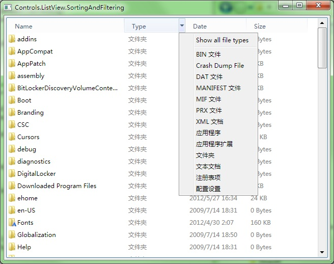
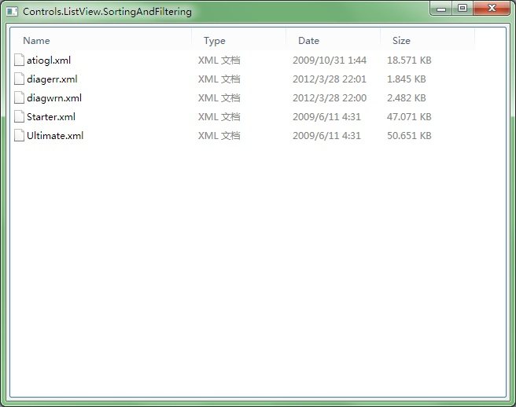
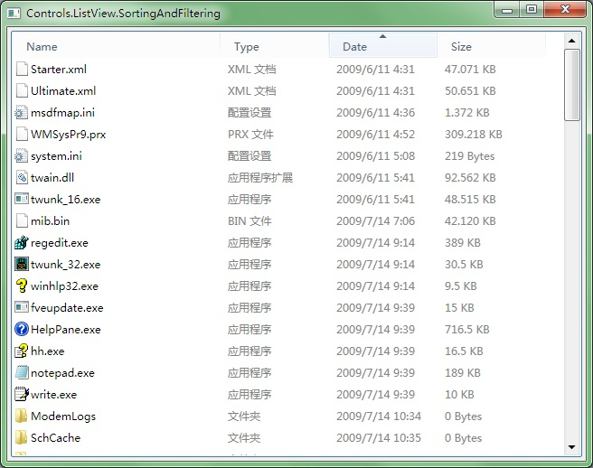

|
|||||
| HOME | GETTING START | DEMOS | DOWNLOAD | DOCUMENT | CONTACT |
ListView.SortingAndFiltering  This demo contains the following code files: Main.cpp
#include "..\CommonLibrary\FileSystemInformation.h"
using namespace vl::collections;
int CALLBACK WinMain(HINSTANCE hInstance, HINSTANCE hPrevInstance, LPSTR lpCmdLine, int CmdShow)
{
return SetupWindowsDirect2DRenderer();
}
/***********************************************************************
SortingAndFilteringWindow
***********************************************************************/
class SortingAndFilteringWindow : public GuiWindow
{
private:
GuiListView* listView;
GuiMenu* fileTypeMenu;
List<Ptr<FileProperties>> fileProperties;
int sortingColumn;
bool ascending;
WString filteredFileType;
LARGE_INTEGER IntFromFileTime(FILETIME fileTime)
{
LARGE_INTEGER li;
li.HighPart=fileTime.dwHighDateTime;
li.LowPart=fileTime.dwLowDateTime;
return li;
}
vint ItemComparer(Ptr<FileProperties> a, Ptr<FileProperties> b)
{
int result=0;
switch(sortingColumn)
{
case -1:
return fileProperties.IndexOf(a.Obj())-fileProperties.IndexOf(b.Obj());
case 0:
result=_wcsicmp(a->GetDisplayName().Buffer(), b->GetDisplayName().Buffer());
break;
case 1:
result=_wcsicmp(a->GetTypeName().Buffer(), b->GetTypeName().Buffer());
break;
case 2:
{
LARGE_INTEGER la=IntFromFileTime(a->GetLastWriteTime());
LARGE_INTEGER lb=IntFromFileTime(b->GetLastWriteTime());
result=la.QuadPart>lb.QuadPart?1:la.QuadPart<lb.QuadPart?-1:0;
}
break;
case 3:
{
LARGE_INTEGER la=a->GetSize();
LARGE_INTEGER lb=b->GetSize();
result=la.QuadPart>lb.QuadPart?1:la.QuadPart<lb.QuadPart?-1:0;
}
break;
}
if(!ascending) result*=-1;
return result;
}
bool ItemFilter(Ptr<FileProperties> a)
{
return filteredFileType==L"" || a->GetTypeName()==filteredFileType;
}
Ptr<list::ListViewItem> CreateFileItem(Ptr<FileProperties> file)
{
Ptr<list::ListViewItem> item=new list::ListViewItem;
// Get large icon.
item->largeImage=file->GetBigIcon();
// Get small icon.
item->smallImage=file->GetSmallIcon();
// Get display name
item->text=file->GetDisplayName();
// Get type name
item->subItems.Add(file->GetTypeName());
// Get last write time
item->subItems.Add(FileTimeToString(file->GetLastWriteTime()));
// Get file size
item->subItems.Add(FileSizeToString(file->GetSize()));
return item;
}
void FillData()
{
Func<vint(Ptr<FileProperties>, Ptr<FileProperties>)> comparer
(this, &SortingAndFilteringWindow::ItemComparer);
Func<bool(Ptr<FileProperties>)> filter
(this, &SortingAndFilteringWindow::ItemFilter);
Func<Ptr<list::ListViewItem>(Ptr<FileProperties>)> converter
(this, &SortingAndFilteringWindow::CreateFileItem);
listView->GetItems().Clear();
CopyFrom(
listView->GetItems(),
fileProperties.Wrap()>>Where(filter)>>OrderBy(comparer)>>Select(converter)
);
}
void ShowAllFileType_Clicked(GuiGraphicsComposition* sender, GuiEventArgs& arguments)
{
filteredFileType=L"";
FillData();
}
void ShowSingleFileType_Clicked(GuiGraphicsComposition* sender, GuiEventArgs& arguments)
{
filteredFileType=sender->GetRelatedControl()->GetText();
FillData();
}
void Column_Clicked(GuiGraphicsComposition* sender, GuiItemEventArgs& arguments)
{
// Get the sorting state of the clicked column
GuiListViewColumnHeader::ColumnSortingState state
=listView->GetItems().GetColumns()[arguments.itemIndex]->sortingState;
// Calculate the new sorting state
switch(state)
{
case GuiListViewColumnHeader::NotSorted:
sortingColumn=arguments.itemIndex;
ascending=true;
break;
case GuiListViewColumnHeader::Ascending:
sortingColumn=arguments.itemIndex;
ascending=false;
break;
case GuiListViewColumnHeader::Descending:
sortingColumn=-1;
break;
}
// Update all list view columns
for(int i=0;i<listView->GetItems().GetColumns().Count();i++)
{
Ptr<list::ListViewColumn> column=listView->GetItems().GetColumns()[i];
if(i==sortingColumn)
{
column->sortingState=
ascending
?GuiListViewColumnHeader::Ascending
:GuiListViewColumnHeader::Descending;
}
else
{
column->sortingState=GuiListViewColumnHeader::NotSorted;
}
}
listView->GetItems().GetColumns().NotifyUpdate(0, listView->GetItems().GetColumns().Count());
// Refresh data;
FillData();
}
public:
SortingAndFilteringWindow()
:GuiWindow(GetCurrentTheme()->CreateWindowStyle())
,sortingColumn(-1)
,ascending(true)
{
this->SetText(L"Controls.ListView.SortingAndFiltering");
// Create list view control to display a folder
listView=g::NewListViewBigIcon();
listView->GetBoundsComposition()->SetAlignmentToParent(Margin(0, 0, 0, 0));
listView->SetHorizontalAlwaysVisible(false);
listView->SetVerticalAlwaysVisible(false);
listView->SetMultiSelect(true);
listView->GetBoundsComposition()->SetAlignmentToParent(Margin(4, 4, 4, 4));
this->AddChild(listView);
// Add columns and changed to detail view
listView->GetItems().GetColumns().Add(new list::ListViewColumn(L"Name", 230));
listView->GetItems().GetColumns().Add(new list::ListViewColumn(L"Type", 120));
listView->GetItems().GetColumns().Add(new list::ListViewColumn(L"Date", 120));
listView->GetItems().GetColumns().Add(new list::ListViewColumn(L"Size", 120));
listView->ChangeItemStyle(new list::ListViewDetailContentProvider);
// Register the column clicked event
listView->ColumnClicked.AttachMethod(this, &SortingAndFilteringWindow::Column_Clicked);
{
// Enumerate all directories and files in the Windows directory.
WString directory=GetWindowsDirectory();
List<WString> directories;
List<WString> files;
SearchDirectoriesAndFiles(directory, directories, files);
FOREACH(WString, file, directories.Wrap()>>Concat(files.Wrap()))
{
fileProperties.Add(new FileProperties(directory+L"\\"+file));
}
}
{
// Create a popup menu
fileTypeMenu=g::NewMenu(0);
GuiStackComposition* menuStack=new GuiStackComposition;
menuStack->SetDirection(GuiStackComposition::Vertical);
menuStack->SetMinSizeLimitation(GuiGraphicsComposition::LimitToElementAndChildren);
menuStack->SetAlignmentToParent(Margin(0, 0, 0, 0));
fileTypeMenu->GetContainerComposition()->AddChild(menuStack);
{
// Create "Show all file types" menu
GuiStackItemComposition* item=new GuiStackItemComposition;
menuStack->AddChild(item);
GuiMenuButton* button=g::NewMenuItemButton();
button->SetText(L"Show all file types");
button->GetBoundsComposition()->SetAlignmentToParent(Margin(0, 0, 0, 0));
button->Clicked.AttachMethod(
this,
&SortingAndFilteringWindow::ShowAllFileType_Clicked
);
item->AddChild(button->GetBoundsComposition());
}
{
// Create menu separator
GuiStackItemComposition* item=new GuiStackItemComposition;
menuStack->AddChild(item);
GuiControl* separator=g::NewMenuSplitter();
separator->GetBoundsComposition()->SetAlignmentToParent(Margin(0, 0, 0, 0));
item->AddChild(separator->GetBoundsComposition());
}
// Added all existing file type in the folder as menu items
Array<WString> fileTypes;
CopyFrom(
fileTypes.Wrap(),
fileProperties.Wrap()
>>Select<Ptr<FileProperties>, WString>
([](Ptr<FileProperties> file){return file->GetTypeName();})
>>Distinct()
>>OrderBy<WString>([](WString a, WString b){return _wcsicmp(a.Buffer(), b.Buffer());})
);
FOREACH(WString, typeName, fileTypes.Wrap())
{
// Create menu button for each file type
GuiStackItemComposition* item=new GuiStackItemComposition;
menuStack->AddChild(item);
GuiMenuButton* button=g::NewMenuItemButton();
button->SetText(typeName);
button->GetBoundsComposition()->SetAlignmentToParent(Margin(0, 0, 0, 0));
button->Clicked.AttachMethod(
this,
&SortingAndFilteringWindow::ShowSingleFileType_Clicked
);
item->AddChild(button->GetBoundsComposition());
}
// Attach the menu to the "Type" column
listView->GetItems().GetColumns()[1]->dropdownPopup=fileTypeMenu;
listView->GetItems().GetColumns().NotifyUpdate(1);
}
FillData();
// set the preferred minimum client size
this->GetBoundsComposition()->SetPreferredMinSize(Size(640, 480));
// call this to calculate the size immediately if any indirect content in the table changes
// so that the window can calcaulte its correct size before calling the MoveToScreenCenter()
this->ForceCalculateSizeImmediately();
// move to the screen center
this->MoveToScreenCenter();
}
~SortingAndFilteringWindow()
{
listView->GetItems().GetColumns()[1]->dropdownPopup=0;
listView->GetItems().GetColumns().NotifyUpdate(1);
delete fileTypeMenu;
}
};
/***********************************************************************
GuiMain
***********************************************************************/
void GuiMain()
{
GuiWindow* window=new SortingAndFilteringWindow;
GetApplication()->Run(window);
delete window;
}
FileSystemInformation.h
#ifndef GACUI_DEMO_FILE_SYSTEM_INFORMATION
#define GACUI_DEMO_FILE_SYSTEM_INFORMATION
#include "..\..\Public\Source\GacUI.h"
#include <ShlObj.h>
using namespace vl;
using namespace vl::collections;
/***********************************************************************
File System Operations
***********************************************************************/
extern WString GetWindowsDirectory();
extern void SearchDirectoriesAndFiles(const WString& path, List<WString>& directories, List<WString>& files);
extern Ptr<GuiImageData> GetFileIcon(const WString& fullPath, UINT uFlags);
extern WString GetFileDisplayName(const WString& fullPath);
extern WString GetFileTypeName(const WString& fullPath);
extern FILETIME GetFileLastWriteTime(const WString& fullPath);
extern LARGE_INTEGER GetFileSize(const WString& fullPath);
extern WString FileTimeToString(const FILETIME& filetime);
extern WString FileSizeToString(LARGE_INTEGER filesize);
/***********************************************************************
FileProperties
***********************************************************************/
class FileProperties
{
private:
Ptr<GuiImageData> smallIcon;
Ptr<GuiImageData> bigIcon;
WString displayName;
WString typeName;
FILETIME lastWriteTime;
LARGE_INTEGER size;
bool loaded;
WString fullPath;
void Load();
public:
FileProperties(const WString& _fullPath);
Ptr<GuiImageData> GetSmallIcon();
Ptr<GuiImageData> GetBigIcon();
WString GetDisplayName();
WString GetTypeName();
FILETIME GetLastWriteTime();
LARGE_INTEGER GetSize();
};
#endif
FileSystemInformation.cpp
#include "FileSystemInformation.h"
/***********************************************************************
File System Operations
***********************************************************************/
WString GetWindowsDirectory()
{
wchar_t folderPath[MAX_PATH]={0};
HRESULT hr=SHGetFolderPath(NULL, CSIDL_WINDOWS, NULL, 0, folderPath);
if(FAILED(hr)) return L"";
return folderPath;
}
void SearchDirectoriesAndFiles(const WString& path, List<WString>& directories, List<WString>& files)
{
// Use FindFirstFile, FindNextFile and FindClose to enumerate all directories and files
WIN32_FIND_DATA findData;
HANDLE findHandle=INVALID_HANDLE_VALUE;
while(true)
{
if(findHandle==INVALID_HANDLE_VALUE)
{
WString searchPath=path+L"\\*";
findHandle=FindFirstFile(searchPath.Buffer(), &findData);
if(findHandle==INVALID_HANDLE_VALUE)
{
break;
}
}
else
{
BOOL result=FindNextFile(findHandle, &findData);
if(result==0)
{
FindClose(findHandle);
break;
}
}
if(findData.dwFileAttributes & FILE_ATTRIBUTE_DIRECTORY)
{
if(wcscmp(findData.cFileName, L".")!=0 && wcscmp(findData.cFileName, L"..")!=0)
{
directories.Add(findData.cFileName);
}
}
else
{
files.Add(findData.cFileName);
}
}
Func<vint(WString a, WString b)> comparer=[](WString a, WString b){return _wcsicmp(a.Buffer(), b.Buffer());};
CopyFrom(directories.Wrap(), directories.Wrap()>>OrderBy(comparer));
CopyFrom(files.Wrap(), files.Wrap()>>OrderBy(comparer));
}
Ptr<GuiImageData> GetFileIcon(const WString& fullPath, UINT uFlags)
{
// Use SHGetFileInfo to get the correct icons for the specified directory or file.
SHFILEINFO info;
DWORD result=SHGetFileInfo(fullPath.Buffer(), 0, &info, sizeof(SHFILEINFO), uFlags);
Ptr<GuiImageData> imageData;
if(result)
{
Ptr<INativeImage> image=windows::CreateImageFromHICON(info.hIcon);
if(image)
{
imageData=new GuiImageData(image, 0);
}
DestroyIcon(info.hIcon);
}
return imageData;
}
WString GetFileDisplayName(const WString& fullPath)
{
SHFILEINFO info;
DWORD result=SHGetFileInfo(fullPath.Buffer(), 0, &info, sizeof(SHFILEINFO), SHGFI_DISPLAYNAME);
return result?info.szDisplayName:L"";
}
WString GetFileTypeName(const WString& fullPath)
{
SHFILEINFO info;
DWORD result=SHGetFileInfo(fullPath.Buffer(), 0, &info, sizeof(SHFILEINFO), SHGFI_TYPENAME);
return result?info.szTypeName:L"";
}
FILETIME GetFileLastWriteTime(const WString& fullPath)
{
// Get file attributes.
WIN32_FILE_ATTRIBUTE_DATA info;
BOOL result=GetFileAttributesEx(fullPath.Buffer(), GetFileExInfoStandard, &info);
// Get the localized string for the file last write date.
FILETIME localFileTime;
FileTimeToLocalFileTime(&info.ftLastWriteTime, &localFileTime);
return localFileTime;
}
LARGE_INTEGER GetFileSize(const WString& fullPath)
{
// Get file attributes.
WIN32_FILE_ATTRIBUTE_DATA info;
BOOL result=GetFileAttributesEx(fullPath.Buffer(), GetFileExInfoStandard, &info);
// Get the string for file size
LARGE_INTEGER li;
li.HighPart=info.nFileSizeHigh;
li.LowPart=info.nFileSizeLow;
return li;
}
WString FileTimeToString(const FILETIME& filetime)
{
SYSTEMTIME localSystemTime;
FileTimeToSystemTime(&filetime, &localSystemTime);
// Get the correct locale
wchar_t localeName[LOCALE_NAME_MAX_LENGTH]={0};
GetSystemDefaultLocaleName(localeName, sizeof(localeName)/sizeof(*localeName));
// Get the localized date string
wchar_t dateString[100]={0};
GetDateFormatEx(localeName, DATE_SHORTDATE, &localSystemTime, NULL, dateString, sizeof(dateString)/sizeof(*dateString), NULL);
// Get the localized time string
wchar_t timeString[100]={0};
GetTimeFormatEx(localeName, TIME_FORCE24HOURFORMAT | TIME_NOSECONDS, &localSystemTime, NULL, timeString, sizeof(timeString)/sizeof(*timeString));
return dateString+WString(L" ")+timeString;
}
WString FileSizeToString(LARGE_INTEGER filesize)
{
WString unit;
double size=0;
if(filesize.QuadPart>=1024*1024*1024)
{
unit=L" GB";
size=(double)filesize.QuadPart/(1024*1024*1024);
}
else if(filesize.QuadPart>=1024*1024)
{
unit=L" MB";
size=(double)filesize.QuadPart/(1024*1024);
}
else if(filesize.QuadPart>=1024)
{
unit=L" KB";
size=(double)filesize.QuadPart/1024;
}
else
{
unit=L" Bytes";
size=(double)filesize.QuadPart;
}
WString sizeString=ftow(size);
const wchar_t* reading=sizeString.Buffer();
const wchar_t* point=wcschr(sizeString.Buffer(), L'.');
if(point)
{
const wchar_t* max=reading+sizeString.Length();
point+=4;
if(point>max) point=max;
sizeString=sizeString.Left(point-reading);
}
return sizeString+unit;
}
/***********************************************************************
FileProperties
***********************************************************************/
void FileProperties::Load()
{
if(!loaded)
{
loaded=true;
smallIcon=GetFileIcon(fullPath, SHGFI_SMALLICON | SHGFI_ICON);
bigIcon=GetFileIcon(fullPath, SHGFI_LARGEICON | SHGFI_ICON);
displayName=GetFileDisplayName(fullPath);
typeName=GetFileTypeName(fullPath);
lastWriteTime=GetFileLastWriteTime(fullPath);
size=GetFileSize(fullPath);
}
}
FileProperties::FileProperties(const WString& _fullPath)
:loaded(false)
,fullPath(_fullPath)
{
}
Ptr<GuiImageData> FileProperties::GetSmallIcon()
{
Load();
return smallIcon;
}
Ptr<GuiImageData> FileProperties::GetBigIcon()
{
Load();
return bigIcon;
}
WString FileProperties::GetDisplayName()
{
Load();
return displayName;
}
WString FileProperties::GetTypeName()
{
Load();
return typeName;
}
FILETIME FileProperties::GetLastWriteTime()
{
Load();
return lastWriteTime;
}
LARGE_INTEGER FileProperties::GetSize()
{
Load();
return size;
}
|
|||||